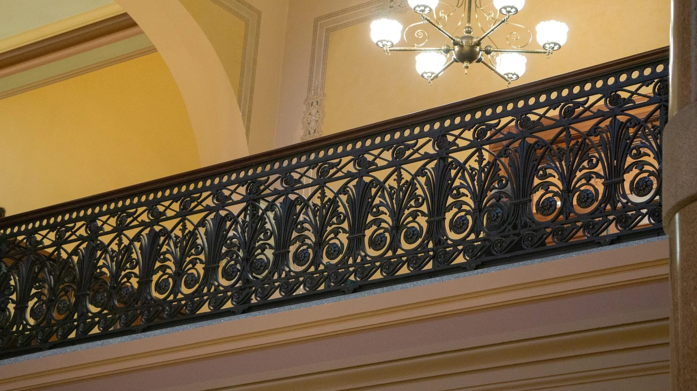
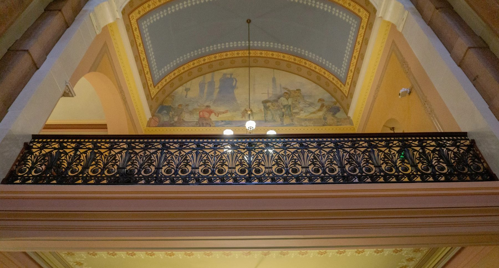
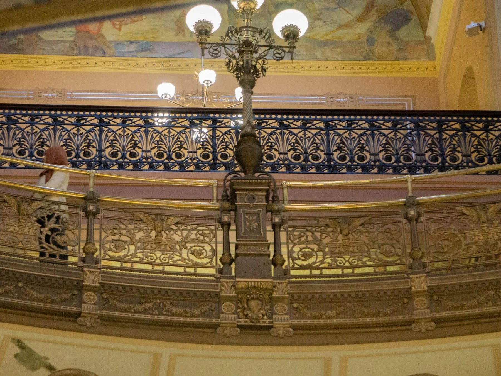
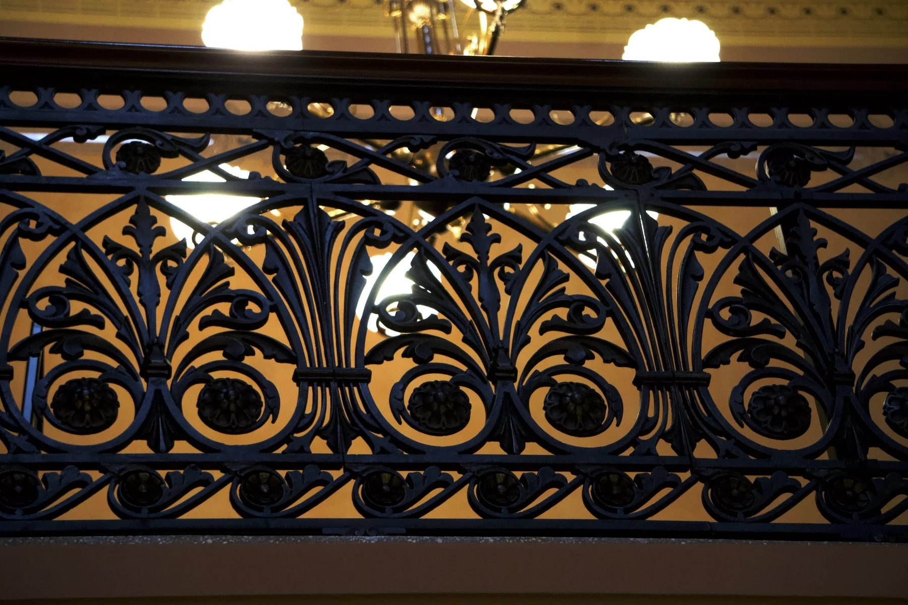
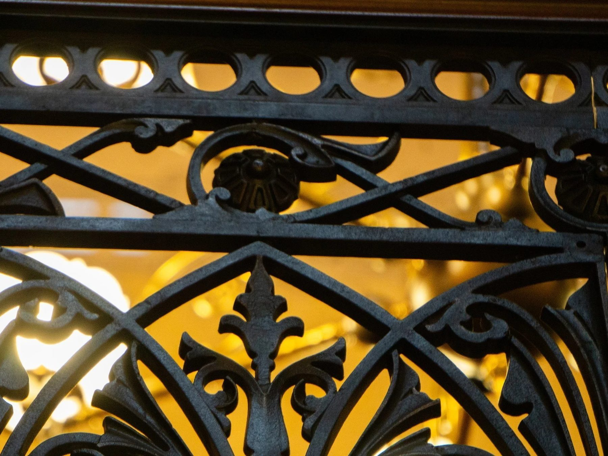
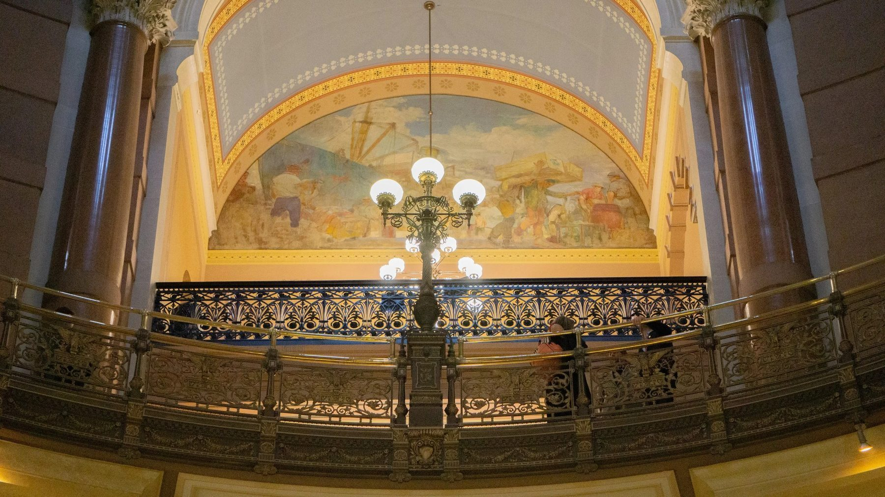
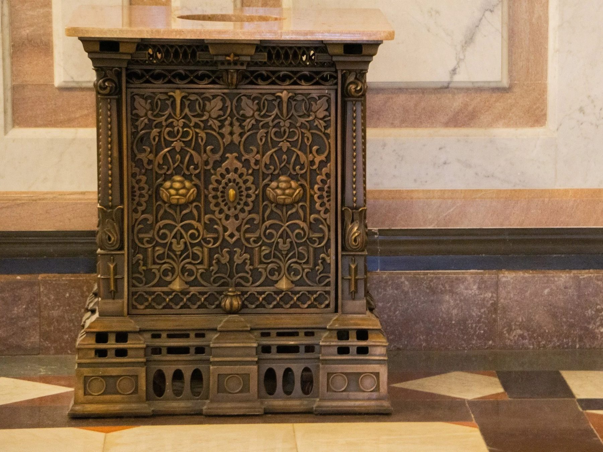
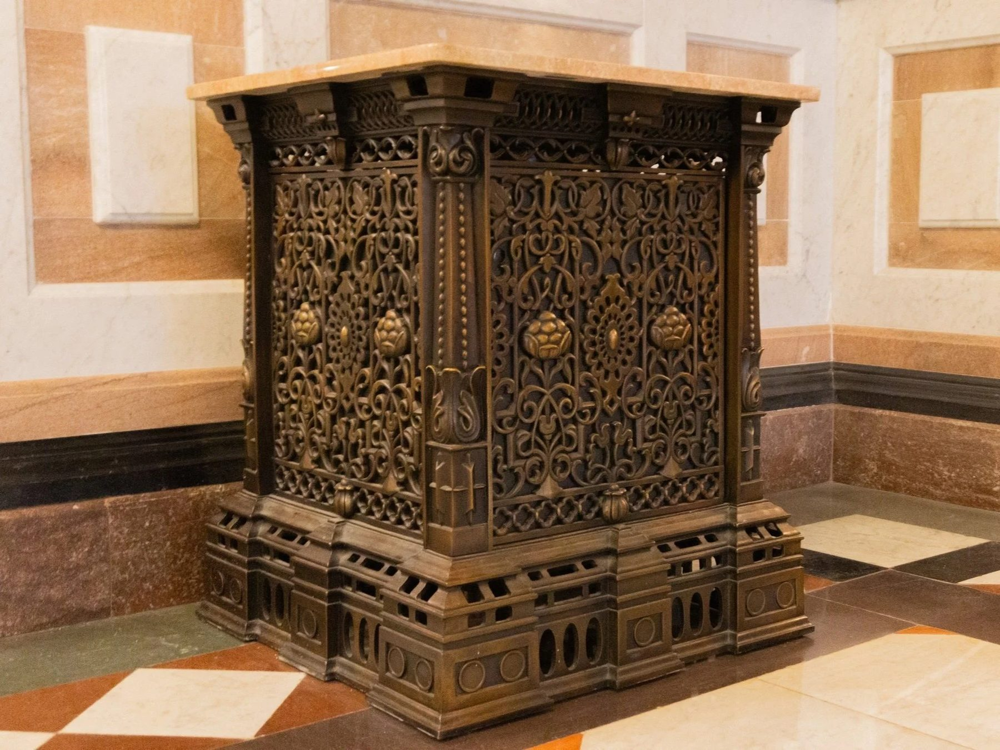

Restoration / 2018 / Springfield, IL
Illinois State Capitol Handrails
Office of the Architect of the Capitol

Nineteenth century iron handrails on the fourth floor gallery, restored and brought to ADA compliance without losing their period character.
The work
The fourth floor gallery outside the Illinois House of Representatives is lined with nineteenth century cast iron handrails, bought from a Sears catalog in the late 1890s. Over the decades they had been painted and repainted to look like bronze, then gold, then back again. The job was to return them to what they were, and to make them safe for the people who use the building now.
The material question
Restoration means matching what already exists, and much of it was missing. The railing also had to reach ADA height and gain a toe kick, so nothing is kicked from the fourth floor onto the third, without the additions reading as a violation of the original.
The making
We removed the components and stripped them back to bare iron. The railing is modular and its sections repeat, so a detail missing in one panel could almost always be found in another; we molded just that portion and cast the replacements, alongside match plate sand patterns and lost wax reproductions patinated to match. The original top rail had itself been wood, in very poor condition. We replaced it with a cap milled to the same profile used throughout the capitol, which gave the height ADA required.
In place
For Ben Stagl it was one of the biggest honors of his life. The Architect of the Capitol took him inside the walls and up into the cupola, where they came out at the top with a direct line of sight to Lincoln's tomb. Then he handed Ben a Sharpie and let him sign the inside of the cupola, alongside others who have worked on the building.
Details
- Year
2018 - Location
Springfield, IL - Category
Restoration - Materials
Cast iron, bronze, milled hardwood
Credits
- Office of the Architect of the Capitol
- CJP Architects
- Imperial Woodworking
- Chicago Crucible
Studio
- ChiLab Studio
- Chicago, Illinois
- Established 2013





Also at the Capitol
Bronze enclosures, also produced for the Illinois State Capitol.


Bring us a drawing,
a model, or a hunch.
The studio
Specialty material projects for architecture, interior design, public art, and the fine arts.
ChiLab Studio, Chicago, Illinois. Established 2013.
What we do
- Metal casting
- Glass
- Finishes
- Digital fabrication
- Metal fabrication
- Restoration
- Project management
Contact
info@chilabstudio.com
chilabstudio.com
Instagram @chilabstudio